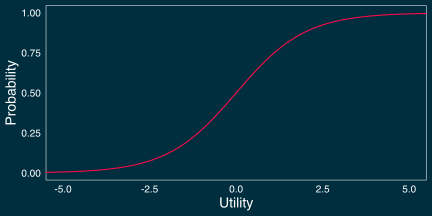
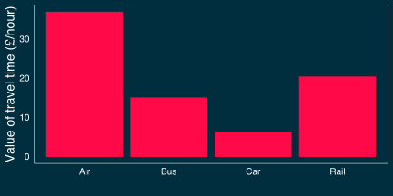

Introduction to discrete choice models in R
Matt Bhagat-Conway
Odum Institute
University of North Carolina at Chapel Hill
August 11, 2022
About me
- Assistant professor of City and Regional Planning
- Research focus: transportation modeling and simulation
- Heavy use of discrete choice models
- PhD in Geography from Arizona State
- Three years experience as transportation modeling software developer
Before we go any further
- Slides, code, and data at https://projects.indicatrix.org/odum-discrete/
Before we go any further
- If you haven’t already installed R, RStudio,
apollo, andtidyverse, do so now - R: https://r-project.org
- RStudio: https://rstudio.com
apolloandtidyverse: in RStudio console, run:
What are discrete choice models?
- Any model of a variable that takes on discrete values
- Could be binary (two values), categorical (more than two values), or quantized (e.g., integers)
Types of discrete choice models
- Random utility models
- Logistic regression, multinomial logistic regression, ordered logit, mixed logit
- Count models
- Poisson and negative binomial regression
- Machine learning
- Random forests, support vector machines, k nearest neighbors
Random utility theory
- Individuals are maximizing the utility of their choices
- Utility is an abstract concept of value
- Individuals choose the choice with the highest utility
- Utility is random because there is a random component to utility
- We won’t know which choice is the highest utility for an individual, only the probabilities that a particular choice will have the highest utility
Binary logistic regression
Binary logistic regression
- A very common model for binary (yes/no) outcomes
- Probably familiar to many
- Usually presented as a generalized linear model
Binary logistic regression: Intuition
- Linear functions can take on any value
- Probabilities need to be between 0 and 1
- The logit function transforms arbitrary linear values to (0, 1)
Binary logistic regression: the math
\[ y^* = \alpha + \beta_1 x_1 + \beta_2 x_2 \cdots + \epsilon \]
\[ \epsilon \thicksim \mathrm{Logistic} \]
\[ p(y = 1) = p(y^* > 0) = \frac{e^{y^*}}{1 + e^{y^*}} \]
The logit function
Logistic regression in R
nhts-carpool-glm.R
Logistic regression in R
Call:
glm(formula = carpool ~ hhsize + cars_per_driver + commute +
social, family = binomial(link = "logit"), data = data)
Deviance Residuals:
Min 1Q Median 3Q Max
-2.1680 -1.1291 -0.4298 1.1035 2.3704
Coefficients:
Estimate Std. Error z value Pr(>|z|)
(Intercept) -0.69705 0.10562 -6.600 4.12e-11 ***
hhsize 0.39411 0.02483 15.872 < 2e-16 ***
cars_per_driver -0.20591 0.06124 -3.362 0.000773 ***
commuteTRUE -1.82661 0.11851 -15.413 < 2e-16 ***
socialTRUE 0.36877 0.09771 3.774 0.000161 ***
---
Signif. codes: 0 '***' 0.001 '**' 0.01 '*' 0.05 '.' 0.1 ' ' 1
(Dispersion parameter for binomial family taken to be 1)
Null deviance: 6927.6 on 4999 degrees of freedom
Residual deviance: 6301.9 on 4995 degrees of freedom
AIC: 6311.9
Number of Fisher Scoring iterations: 4Binary logistic regression as a random utility model
- We can treat the linear predictor in logistic regression as the utility of the modeled outcome
- In this case, the utility of carpooling
- We also need a utility of not carpooling
- Decisionmakers will choose the highest utility alternative
Binary logistic regression as a random utility model
- Utilities are only meaningful relative to each other
- Usual practice is to set utility of one alternative to 0
Binary logistic regression as a random utility model
\[ y^* = \alpha + \beta_1 x_1 + \beta_2 x_2 \cdots + \epsilon \]
\[ p(y = 1) = p(y^* > 0)\\= \frac{e^{y^*}}{1 + e^{y^*}} \]
Binary logistic regression as a random utility model
\[ U_{y=1} = \alpha + \beta_1 x_1 + \beta_2 x_2 \cdots + \epsilon_1 \]
\[ U_{y=0} = 0 + \epsilon_0 \]
\[ p(y = 1) = p(U_{y=1} > U_{y=0})\\= \frac{e^{U_{y=1}}}{e^{U_{y=0}} + e^{U_{y=1}}} \]
Binary logistic regression as a random utility model in R
nhts-carpool-apollo.R
# In Apollo, you specify your utility functions by hand,
# first telling Apollo what coefficients to estimate
apollo_beta = c(
constant_carpool = 0, # 0 is starting value
b_hhsize = 0,
b_cars_per_driver = 0,
b_commute = 0,
b_social = 0
)
# any parameters that you want to remain constant go here
apollo_fixed = c()# this function calculates probabilities of each alternative
apollo_probabilities = function(apollo_beta, apollo_inputs,
functionality="estimate") {
# so we can refer to variables by name
apollo_attach(apollo_beta, apollo_inputs)
on.exit(apollo_detach(apollo_beta, apollo_inputs))
# This is the list of probabilities for the alternatives
# for each observation
P = list()
# Define utility functions
V = list()
V[["carpool"]] = constant_carpool + b_hhsize * hhsize +
b_cars_per_driver * cars_per_driver +
b_commute * commute + b_social * social
V[["not_carpool"]] = 0
# associate utility functions with data
logit_settings = list(
alternatives = c(carpool=T, not_carpool=F),
avail = list(carpool=T, not_carpool=T),
choiceVar = carpool,
utilities = V
)
# compute probabilities
P[["model"]] = apollo_mnl(logit_settings, functionality)
P = apollo_prepareProb(P, apollo_inputs, functionality)
return(P)
}# finally, estimate the model
model = apollo_estimate(apollo_beta, apollo_fixed,
apollo_probabilities, apollo_inputs)Preparing user-defined functions.
Testing likelihood function...
Overview of choices for MNL model component :
carpool not_carpool
Times available 5000.0 5000.0
Times chosen 2430.0 2570.0
Percentage chosen overall 48.6 51.4
Percentage chosen when available 48.6 51.4
Pre-processing likelihood function...
Testing influence of parameters
Starting main estimation
Initial function value: -3465.736
Initial gradient value:
constant_carpool b_hhsize b_cars_per_driver b_commute
-70.0000 571.5000 -187.2226 -199.5000
b_social
51.5000
initial value 3465.735903
iter 2 value 3462.049070
iter 3 value 3404.483122
iter 4 value 3266.363837
iter 5 value 3260.544356
iter 6 value 3252.724971
iter 7 value 3163.319397
iter 8 value 3151.229542
iter 9 value 3150.963126
iter 10 value 3150.958622
iter 11 value 3150.958331
iter 11 value 3150.958327
iter 11 value 3150.958327
final value 3150.958327
converged
Additional convergence test using scaled estimation. Parameters will be
scaled by their current estimates and additional iterations will be
performed.
initial value 3150.958327
iter 1 value 3150.958327
final value 3150.958327
converged
Estimated parameters:
Estimate
constant_carpool -0.6971
b_hhsize 0.3941
b_cars_per_driver -0.2059
b_commute -1.8266
b_social 0.3688
Computing covariance matrix using analytical gradient.
0%....25%....50%...100%
Negative definite Hessian with maximum eigenvalue: -69.347981
Computing score matrix...
Calculating LL(0) for applicable models...
Calculating LL(c) for applicable models...
Calculating LL of each model component...Model run by mwbc using Apollo 0.2.7 on R 4.2.1 for Darwin.
www.ApolloChoiceModelling.com
Model name : Carpool_binary
Model description : No model description provided in apollo_control
Model run at : 2022-08-10 12:28:22
Estimation method : bfgs
Model diagnosis : successful convergence
Number of individuals : 5000
Number of rows in database : 5000
Number of modelled outcomes : 5000
Number of cores used : 1
Model without mixing
LL(start) : -3465.74
LL(0) : -3465.74
LL(C) : -3463.78
LL(final) : -3150.96
Rho-square (0) : 0.0908
Adj.Rho-square (0) : 0.0894
Rho-square (C) : 0.0903
Adj.Rho-square (C) : 0.0889
AIC : 6311.92
BIC : 6344.5
Estimated parameters : 5
Time taken (hh:mm:ss) : 00:00:0.46
pre-estimation : 00:00:0.25
estimation : 00:00:0.06
post-estimation : 00:00:0.15
Iterations : 15
Min abs eigenvalue of Hessian : 69.34798
Unconstrained optimisation.
Estimates:
Estimate s.e. t.rat.(0) Rob.s.e. Rob.t.rat.(0)
constant_carpool -0.6971 0.10562 -6.600 0.10562 -6.600
b_hhsize 0.3941 0.02483 15.871 0.02527 15.595
b_cars_per_driver -0.2059 0.06124 -3.362 0.06171 -3.337
b_commute -1.8266 0.11851 -15.413 0.12392 -14.740
b_social 0.3688 0.09771 3.774 0.09735 3.788But don’t take my word for it…
Call:
glm(formula = carpool ~ hhsize + cars_per_driver + commute +
social, family = binomial(link = "logit"), data = data)
Deviance Residuals:
Min 1Q Median 3Q Max
-2.1680 -1.1291 -0.4298 1.1035 2.3704
Coefficients:
Estimate Std. Error z value Pr(>|z|)
(Intercept) -0.69705 0.10562 -6.600 4.12e-11 ***
hhsize 0.39411 0.02483 15.872 < 2e-16 ***
cars_per_driver -0.20591 0.06124 -3.362 0.000773 ***
commuteTRUE -1.82661 0.11851 -15.413 < 2e-16 ***
socialTRUE 0.36877 0.09771 3.774 0.000161 ***
---
Signif. codes: 0 '***' 0.001 '**' 0.01 '*' 0.05 '.' 0.1 ' ' 1
(Dispersion parameter for binomial family taken to be 1)
Null deviance: 6927.6 on 4999 degrees of freedom
Residual deviance: 6301.9 on 4995 degrees of freedom
AIC: 6311.9
Number of Fisher Scoring iterations: 4Questions?
The multinomial logit model
What about more than two outcomes?
- Random utility theory doesn’t constrain us to two outcomes
- We can have many outcomes, and decisionmakers choose the one with the highest utility
- This is known as a multinomial model
Extending logistic regression to the multinomial case
- Instead of two utilities \(U_{y=1}\) and \(U_{y=0}\), we have arbitrary number of utility functions \(U_i\)
- Decisionmakers choose the option with the highest utility
- As with binary logistic regression, utility functions are usually linear combinations of parameters
Multinomial logistic regression: the math
- Probability then becomes
\[ p(y=i)\\= p(U_i > \mathrm{all~other}~U)\\ =\frac{e^{U_i}}{e^{U_1} + e^{U_2} \cdots}\\ =\frac{e^{U_i}}{\sum_{j \in I} e^{U_j}} \]
Multinomial logistic regression in R
- We will build a model of working from home expectation post-pandemic, using data from the COVID Future study.
- We will estimate four utility functions, for being unable to, rarely, frequently, and always working from home
- Based on age, income, and job type
Multinomial logistic regression in R
` - These utility functions will have the same variables but different coefficients - Each will also have a alternative specific constant—like a constant in logistic regression that represents the base rate, but for each alternative - One utility function will be held at zero
Multinomial logistic regression in R
covidfuture-wfh-mnl.R
# now, we must define all the coefficients
# we have separate sets of coefficients for each utility
# function, because the utilities need to be different
apollo_beta = c(
asc_rarely = 0,
asc_often = 0,
asc_always = 0,
b_rarely_age = 0,
b_often_age = 0,
b_always_age = 0,
b_rarely_highinc = 0,
b_often_highinc = 0,
b_always_highinc = 0,
b_rarely_service_worker = 0,
b_often_service_worker = 0,
b_always_service_worker = 0
)# Finally, we define the utility functions in apollo_probabilities
apollo_probabilities = function(apollo_beta, apollo_inputs,
functionality="estimate") {
apollo_attach(apollo_beta, apollo_inputs)
on.exit(apollo_detach(apollo_beta, apollo_inputs))
P = list()
# define utility functions
V = list()
# fix one utility to zero
V[["Unable"]] = 0
V[["Rarely"]] = asc_rarely + b_rarely_age * age +
b_rarely_highinc * income_100k_plus +
b_rarely_service_worker * service_worker
V[["Often"]] = asc_often + b_often_age * age +
b_often_highinc * income_100k_plus +
b_often_service_worker * service_worker
V[["Always"]] = asc_always + b_always_age * age +
b_always_highinc * income_100k_plus +
b_always_service_worker * service_worker
mnl_settings = list(
alternatives = c(Unable="Unable", Rarely="Rarely",
Often="Often", Always="Always"),
avail = list(Unable=T, Rarely=T, Often=T, Always=T),
choiceVar = wfh,
utilities = V
)
P[["model"]] = apollo_mnl(mnl_settings, functionality)
P = apollo_prepareProb(P, apollo_inputs, functionality)
return(P)
}# estimate model
model = apollo_estimate(apollo_beta, apollo_fixed,
apollo_probabilities, apollo_inputs)Preparing user-defined functions.
Testing likelihood function...
Overview of choices for MNL model component :
Unable Rarely Often Always
Times available 4895.00 4895.00 4895.0 4895.00
Times chosen 2386.00 228.00 1640.0 641.00
Percentage chosen overall 48.74 4.66 33.5 13.09
Percentage chosen when available 48.74 4.66 33.5 13.09
Pre-processing likelihood function...
Testing influence of parameters
Starting main estimation
Initial function value: -6785.911
Initial gradient value:
asc_rarely asc_often asc_always
-995.75 416.25 -582.75
b_rarely_age b_often_age b_always_age
-45652.00 16701.00 -23413.00
b_rarely_highinc b_often_highinc b_always_highinc
-361.50 380.50 -183.50
b_rarely_service_worker b_often_service_worker b_always_service_worker
-493.25 -56.25 -415.25
initial value 6785.910898
iter 2 value 6028.442633
iter 3 value 5685.432004
iter 4 value 5679.055816
iter 5 value 5394.755990
iter 6 value 5278.692311
iter 7 value 5263.035019
iter 8 value 5258.497397
iter 9 value 5248.299040
iter 10 value 5221.159849
iter 11 value 5173.585242
iter 12 value 5125.560646
iter 13 value 5111.633098
iter 14 value 5106.523896
iter 15 value 5082.704875
iter 16 value 5079.556757
iter 17 value 5078.866308
iter 18 value 5078.706760
iter 19 value 5078.698911
iter 20 value 5078.698753
iter 20 value 5078.698750
iter 20 value 5078.698749
final value 5078.698749
converged
Additional convergence test using scaled estimation. Parameters will be
scaled by their current estimates and additional iterations will be
performed.
initial value 5078.698749
iter 1 value 5078.698749
final value 5078.698749
converged
Estimated parameters:
Estimate
asc_rarely -0.72861
asc_often 0.50458
asc_always -1.36727
b_rarely_age -0.03318
b_often_age -0.01467
b_always_age 0.01224
b_rarely_highinc 0.81208
b_often_highinc 1.01227
b_always_highinc 0.53411
b_rarely_service_worker -0.93900
b_often_service_worker -1.26770
b_always_service_worker -1.54383
Computing covariance matrix using analytical gradient.
0%....25%....50%....75%....100%
Negative definite Hessian with maximum eigenvalue: -16.466841
Computing score matrix...
Calculating LL(0) for applicable models...
Calculating LL(c) for applicable models...
Calculating LL of each model component...Model run by mwbc using Apollo 0.2.7 on R 4.2.1 for Darwin.
www.ApolloChoiceModelling.com
Model name : WFH_Postpandemic
Model description : No model description provided in apollo_control
Model run at : 2022-08-10 12:28:23
Estimation method : bfgs
Model diagnosis : successful convergence
Number of individuals : 4895
Number of rows in database : 4895
Number of modelled outcomes : 4895
Number of cores used : 1
Model without mixing
LL(start) : -6785.91
LL(0) : -6785.91
LL(C) : -5510.24
LL(final) : -5078.7
Rho-square (0) : 0.2516
Adj.Rho-square (0) : 0.2498
Rho-square (C) : 0.0783
Adj.Rho-square (C) : 0.0761
AIC : 10181.4
BIC : 10259.35
Estimated parameters : 12
Time taken (hh:mm:ss) : 00:00:0.7
pre-estimation : 00:00:0.26
estimation : 00:00:0.14
post-estimation : 00:00:0.3
Iterations : 24
Min abs eigenvalue of Hessian : 16.46684
Unconstrained optimisation.
Estimates:
Estimate s.e. t.rat.(0) Rob.s.e.
asc_rarely -0.72861 0.231197 -3.151 0.234610
asc_often 0.50458 0.116246 4.341 0.118378
asc_always -1.36727 0.163257 -8.375 0.158789
b_rarely_age -0.03318 0.005224 -6.351 0.005380
b_often_age -0.01467 0.002391 -6.135 0.002418
b_always_age 0.01224 0.003156 3.880 0.003086
b_rarely_highinc 0.81208 0.147684 5.499 0.144518
b_often_highinc 1.01227 0.072260 14.009 0.071662
b_always_highinc 0.53411 0.096440 5.538 0.095423
b_rarely_service_worker -0.93900 0.143583 -6.540 0.141024
b_often_service_worker -1.26770 0.069906 -18.134 0.069960
b_always_service_worker -1.54383 0.099610 -15.499 0.099288
Rob.t.rat.(0)
asc_rarely -3.106
asc_often 4.262
asc_always -8.611
b_rarely_age -6.168
b_often_age -6.066
b_always_age 3.968
b_rarely_highinc 5.619
b_often_highinc 14.126
b_always_highinc 5.597
b_rarely_service_worker -6.658
b_often_service_worker -18.120
b_always_service_worker -15.549Interpreting multinomial logit results
| Rarely | Often | Always | |
|---|---|---|---|
| ASC | -0.73 | 0.50 | -1.37 |
| Age | -0.03 | -0.01 | 0.01 |
| High income | 0.81 | 1.01 | 0.53 |
| Service worker | -0.94 | -1.27 | -1.54 |
Note: all variables significant at \(p < 0.05\)
- Relative to being unable to WFH,
- Older people are less likely to WFH rarely or often, but more likely to always
- Higher income people are much more likely to be able to and choose to WFH
- Service workers are less likely to be able to WFH
- Scale of age variable is different from others
Questions?
Specifying a multinomial logit model
- Multinomial logit models can have independent variables that vary at the individual level (e.g., income)
- Can also have variables at the alternative level (e.g., travel time)
- Utilities identified only up to a constant offset
- Constant changes to all utilities does not change outcome
Specifying a multinomial logit model
- Variables that vary at individual level must have different coefficients for each alternative, and one must be zero
- Variables that vary at alternative level may or may not have different coefficients for each alternative, and there is no need have one zero coefficient
- But you do have to know values for unchosen alternatives
Specifying a multinomial logit model
Estimating a multinomial logit model in R
- We’re going to build a multinomial logit mode choice model of intercity mode choice
- Data from Apollo examples
The data
| ID | av_car | av_bus | av_air | av_rail | time_car | cost_car | time_bus | cost_bus | access_bus | time_air | cost_air | access_air | service_air | time_rail | cost_rail | access_rail | service_rail | female | business | income | choice |
|---|---|---|---|---|---|---|---|---|---|---|---|---|---|---|---|---|---|---|---|---|---|
| 1 | 0 | 0 | 1 | 1 | 0 | 0 | 0 | 0 | 0 | 50 | 80 | 55 | 0 | 140 | 55 | 5 | 0 | 0 | 0 | 46705 | 4 |
| 1 | 0 | 0 | 1 | 1 | 0 | 0 | 0 | 0 | 0 | 70 | 80 | 45 | 0 | 170 | 45 | 20 | 0 | 0 | 0 | 46705 | 4 |
| 2 | 1 | 1 | 0 | 1 | 345 | 40 | 345 | 30 | 15 | 0 | 0 | 0 | 0 | 130 | 55 | 20 | 0 | 1 | 0 | 50123 | 2 |
| 2 | 1 | 1 | 0 | 1 | 345 | 45 | 345 | 25 | 20 | 0 | 0 | 0 | 0 | 130 | 45 | 10 | 0 | 1 | 0 | 50123 | 2 |
| 3 | 0 | 0 | 1 | 1 | 0 | 0 | 0 | 0 | 0 | 90 | 65 | 40 | 0 | 130 | 35 | 20 | 0 | 1 | 0 | 67589 | 4 |
| 3 | 0 | 0 | 1 | 1 | 0 | 0 | 0 | 0 | 0 | 60 | 110 | 40 | 0 | 170 | 35 | 15 | 0 | 1 | 0 | 67589 | 4 |
Estimation in R
mode-choice-mnl.R
# A tibble: 6 × 22
ID av_car av_bus av_air av_rail time_car cost_car time_bus cost_bus acces…¹
<dbl> <dbl> <dbl> <dbl> <dbl> <dbl> <dbl> <dbl> <dbl> <dbl>
1 1 0 0 1 1 0 0 0 0 0
2 1 0 0 1 1 0 0 0 0 0
3 2 1 1 0 1 345 40 345 30 15
4 2 1 1 0 1 345 45 345 25 20
5 3 0 0 1 1 0 0 0 0 0
6 3 0 0 1 1 0 0 0 0 0
# … with 12 more variables: time_air <dbl>, cost_air <dbl>, access_air <dbl>,
# service_air <dbl>, time_rail <dbl>, cost_rail <dbl>, access_rail <dbl>,
# service_rail <dbl>, female <dbl>, business <dbl>, income <dbl>,
# choice <dbl>, and abbreviated variable name ¹access_bus
# ℹ Use `colnames()` to see all variable namesapollo_beta = c(
asc_air = 0,
asc_bus = 0,
asc_rail = 0,
# leaving out an asc_car as base category
b_cost = 0,
b_access_time = 0,
b_in_vehicle_time = 0,
# income is an individual level variable, so
# must be different for different alternatives
b_income_air = 0,
b_income_bus = 0,
b_income_rail = 0
)apollo_probabilities = function(apollo_beta, apollo_inputs,
functionality="estimate") {
apollo_attach(apollo_beta, apollo_inputs)
on.exit(apollo_detach(apollo_beta, apollo_inputs))
P = list()
# define utility functions
V = list()
# We can include cost and in-vehicle time here because they vary over
# alternatives
V[["car"]] = b_cost * cost_car +
b_in_vehicle_time * time_car
V[["air"]] = asc_air +
b_cost * cost_air +
b_in_vehicle_time * time_air +
b_access_time * access_air +
b_income_air * income
V[["rail"]] = asc_rail +
b_cost * cost_rail +
b_in_vehicle_time * time_rail +
b_access_time * access_rail +
b_income_rail * income
V[["bus"]] = asc_bus +
b_cost * cost_bus +
b_in_vehicle_time * time_bus +
b_access_time * access_bus +
b_income_bus * income
mnl_settings = list(
alternatives = c(car=1, air=3, rail=4, bus=2),
avail = list(car=av_car, air=av_air, rail=av_rail, bus=av_bus),
choiceVar = choice,
utilities = V
)
P[["model"]] = apollo_mnl(mnl_settings, functionality)
# For panel data, this multiplies observations for single individuals
# together - no effect in multinomial logit but still required.
P = apollo_panelProd(P, apollo_inputs, functionality)
P = apollo_prepareProb(P, apollo_inputs, functionality)
return(P)
}# estimate model
model = apollo_estimate(apollo_beta, apollo_fixed,
apollo_probabilities, apollo_inputs)Preparing user-defined functions.
Testing likelihood function...
Overview of choices for MNL model component :
car air rail bus
Times available 778.00 752.00 874.00 902.00
Times chosen 332.00 215.00 327.00 126.00
Percentage chosen overall 33.20 21.50 32.70 12.60
Percentage chosen when available 42.67 28.59 37.41 13.97
Pre-processing likelihood function...
Analytical gradient is different to numerical one. Numerical gradients
will be used.
Testing influence of parameters.........
Starting main estimation
Initial function value: -1170.86
Initial gradient value:
asc_air asc_bus asc_rail b_cost
-8.000002e+00 -1.536667e+02 5.966667e+01 -1.329167e+02
b_access_time b_in_vehicle_time b_income_air b_income_bus
-1.810417e+03 -1.898042e+04 3.114006e+05 -7.703172e+06
b_income_rail
2.710651e+06
initial value 1170.860076
iter 2 value 1112.061643
iter 3 value 1098.117019
iter 4 value 1096.280213
iter 5 value 1088.850808
iter 6 value 1044.655722
iter 7 value 1043.621915
iter 8 value 1037.024630
iter 9 value 1027.797450
iter 10 value 1026.422719
iter 11 value 1021.845626
iter 12 value 1020.058229
iter 13 value 1020.002110
iter 14 value 1019.999301
iter 14 value 1019.999286
iter 14 value 1019.999286
final value 1019.999286
converged
Additional convergence test using scaled estimation. Parameters will be
scaled by their current estimates and additional iterations will be
performed.
initial value 1019.999286
iter 1 value 1019.999286
final value 1019.999286
converged
Estimated parameters:
Estimate
asc_air -0.922580
asc_bus -0.369843
asc_rail -0.679845
b_cost -0.032032
b_access_time -0.006419
b_in_vehicle_time -0.006126
b_income_air 1.045e-05
b_income_bus -2.252e-05
b_income_rail 6.963e-07
Computing covariance matrix using numerical methods (numDeriv).
0%....25%....50%....75%....100%
Negative definite Hessian with maximum eigenvalue: -3.070863
Computing score matrix...
Calculating LL(0) for applicable models...
Calculating LL(c) for applicable models...
Calculating LL of each model component...Model run by mwbc using Apollo 0.2.7 on R 4.2.1 for Darwin.
www.ApolloChoiceModelling.com
Model name : Apollo_Mode_Choice
Model description : No model description provided in apollo_control
Model run at : 2022-08-10 12:28:24
Estimation method : bfgs
Model diagnosis : successful convergence
Number of individuals : 500
Number of rows in database : 1000
Number of modelled outcomes : 1000
Number of cores used : 1
Model without mixing
LL(start) : -1170.86
LL(0) : -1170.86
LL(C) : -1085.14
LL(final) : -1020
Rho-square (0) : 0.1288
Adj.Rho-square (0) : 0.1212
Rho-square (C) : 0.06
Adj.Rho-square (C) : 0.0517
AIC : 2058
BIC : 2102.17
Estimated parameters : 9
Time taken (hh:mm:ss) : 00:00:0.67
pre-estimation : 00:00:0.15
estimation : 00:00:0.28
post-estimation : 00:00:0.24
Iterations : 20
Min abs eigenvalue of Hessian : 3.070863
Unconstrained optimisation.
Estimates:
Estimate s.e. t.rat.(0) Rob.s.e. Rob.t.rat.(0)
asc_air -0.922580 0.502076 -1.8375 0.497421 -1.8547
asc_bus -0.369843 0.315033 -1.1740 0.306346 -1.2073
asc_rail -0.679845 0.332292 -2.0459 0.342767 -1.9834
b_cost -0.032032 0.003242 -9.8796 0.003168 -10.1112
b_access_time -0.006419 0.005974 -1.0744 0.005835 -1.1001
b_in_vehicle_time -0.006126 0.001295 -4.7290 0.001368 -4.4792
b_income_air 1.045e-05 5.899e-06 1.7707 6.025e-06 1.7338
b_income_bus -2.252e-05 6.741e-06 -3.3408 6.534e-06 -3.4463
b_income_rail 6.963e-07 5.090e-06 0.1368 5.216e-06 0.1335Model output saved to /Users/mwbc/Library/CloudStorage/OneDrive-UniversityofNorthCarolinaatChapelHill/teaching/odum-discrete/Apollo_Mode_Choice_output.txt
Estimates saved to /Users/mwbc/Library/CloudStorage/OneDrive-UniversityofNorthCarolinaatChapelHill/teaching/odum-discrete/Apollo_Mode_Choice_estimates.csv
Model object saved to /Users/mwbc/Library/CloudStorage/OneDrive-UniversityofNorthCarolinaatChapelHill/teaching/odum-discrete/Apollo_Mode_Choice.rds Valuation using discrete choice models
- A common use for discrete choice models is to calculate willingness-to-pay
- The linear-in-parameters utility function puts everything in terms of utility
- If we have a cost parameter, we can use the model to put everything else in monetary units
Valuation using discrete choice models
- The coefficients of the model are how much of
xone unit of utility is worth- i.e. partial derivatives of utility with respect to
x
- i.e. partial derivatives of utility with respect to
- We want value of time, i.e. dollars / hour
- Travel time coefficient is utility / minute
- Cost coefficient is utility / dollar
- If \(u\) is utility, \(c\) is cost, and \(t\) is in-vehicle time, \(\frac{\beta_t}{\beta_{c}} = \frac{\frac{\delta u}{\delta t}}{\frac{\delta u}{\delta c}} = \frac{\delta c}{\delta t}\)
Valuation using discrete choice models
\[\beta_c = -0.032\]
\[\beta_t = -0.0061\]
\[ \frac{\beta_t}{\beta_c} = \frac{-0.0061}{-0.032} = {£0.191}/\mathrm{minute} = {£11.46}/\mathrm{hour} \]
Confidence intervals for valuation
- We can use the Delta method to calculate standard errors for combinations of parameters (Daly, Hess, and Ortúzar 2020)
- Implemented in Apollo using
apollo_deltaMethodfunction
Exercise
- People may value in-vehicle time differently on the train vs. plane vs. car vs. bus
- Modify the model to estimate separate in-vehicle time coefficients for each mode, and calculate willingness-to-pay for each
- (One) answer in mode-choice-mnl-in-vehicle-answers.R
Solution
apollo_beta = c(
asc_air = 0,
asc_bus = 0,
asc_rail = 0,
# leaving out an asc_car as base category
b_cost = 0,
b_access_time = 0,
b_in_vehicle_time_air = 0,
b_in_vehicle_time_bus = 0,
b_in_vehicle_time_car = 0,
b_in_vehicle_time_rail = 0,
# income and party_size are individual level variable, so
# must be different for different alternatives
b_income_air = 0,
b_income_bus = 0,
b_income_rail = 0
)apollo_probabilities = function(apollo_beta, apollo_inputs,
functionality="estimate") {
apollo_attach(apollo_beta, apollo_inputs)
on.exit(apollo_detach(apollo_beta, apollo_inputs))
P = list()
# define utility functions
V = list()
# We can include cost and in-vehicle time here because they vary over
# alternatives
V[["car"]] = b_cost * cost_car +
b_in_vehicle_time_car * time_car
V[["air"]] = asc_air +
b_cost * cost_air +
b_in_vehicle_time_air * time_air +
b_access_time * access_air +
b_income_air * income
V[["rail"]] = asc_rail +
b_cost * cost_rail +
b_in_vehicle_time_rail * time_rail +
b_access_time * access_rail +
b_income_rail * income
V[["bus"]] = asc_bus +
b_cost * cost_bus +
b_in_vehicle_time_bus * time_bus +
b_access_time * access_bus +
b_income_bus * income
mnl_settings = list(
alternatives = c(car=1, air=3, rail=4, bus=2),
avail = list(car=av_car, air=av_air, rail=av_rail, bus=av_bus),
choiceVar = choice,
utilities = V
)
P[["model"]] = apollo_mnl(mnl_settings, functionality)
# For panel data, this multiplies observations for single individuals
# together - no effect in multinomial logit but still required.
P = apollo_panelProd(P, apollo_inputs, functionality)
P = apollo_prepareProb(P, apollo_inputs, functionality)
return(P)
}# estimate model
model = apollo_estimate(apollo_beta, apollo_fixed,
apollo_probabilities, apollo_inputs)Preparing user-defined functions.
Testing likelihood function...
Overview of choices for MNL model component :
car air rail bus
Times available 778.00 752.00 874.00 902.00
Times chosen 332.00 215.00 327.00 126.00
Percentage chosen overall 33.20 21.50 32.70 12.60
Percentage chosen when available 42.67 28.59 37.41 13.97
Pre-processing likelihood function...
Analytical gradient is different to numerical one. Numerical gradients
will be used.
Testing influence of parameters............
Starting main estimation
Initial function value: -1170.86
Initial gradient value:
asc_air asc_bus asc_rail
-8.000002e+00 -1.536667e+02 5.966667e+01
b_cost b_access_time b_in_vehicle_time_air
-1.329167e+02 -1.810417e+03 -6.925000e+02
b_in_vehicle_time_bus b_in_vehicle_time_car b_in_vehicle_time_rail
-5.759500e+04 3.107750e+04 8.229583e+03
b_income_air b_income_bus b_income_rail
3.114006e+05 -7.703172e+06 2.710651e+06
initial value 1170.860076
iter 2 value 1112.058599
iter 3 value 1098.115876
iter 4 value 1096.279422
iter 5 value 1088.042268
iter 6 value 1063.689936
iter 7 value 1054.903518
iter 8 value 1040.329195
iter 9 value 1037.028717
iter 10 value 1037.022155
iter 11 value 1016.930614
iter 12 value 1014.940892
iter 13 value 1014.780724
iter 14 value 1014.752777
iter 15 value 1014.741682
iter 16 value 1014.741571
iter 16 value 1014.741570
iter 16 value 1014.741570
final value 1014.741570
converged
Additional convergence test using scaled estimation. Parameters will be
scaled by their current estimates and additional iterations will be
performed.
initial value 1014.741570
iter 1 value 1014.741570
final value 1014.741570
converged
Estimated parameters:
Estimate
asc_air 1.190584
asc_bus 1.340214
asc_rail 1.013686
b_cost -0.034030
b_access_time -0.010182
b_in_vehicle_time_air -0.020861
b_in_vehicle_time_bus -0.008454
b_in_vehicle_time_car -0.003488
b_in_vehicle_time_rail -0.011478
b_income_air 9.912e-06
b_income_bus -2.320e-05
b_income_rail -8.098e-08
Computing covariance matrix using numerical methods (numDeriv).
0%....25%....50%....75%....100%
Negative definite Hessian with maximum eigenvalue: -0.691575
Computing score matrix...
Calculating LL(0) for applicable models...
Calculating LL(c) for applicable models...
Calculating LL of each model component...Model run by mwbc using Apollo 0.2.7 on R 4.2.1 for Darwin.
www.ApolloChoiceModelling.com
Model name : Apollo_Mode_Choice_Flexible
Model description : No model description provided in apollo_control
Model run at : 2022-08-10 12:28:25
Estimation method : bfgs
Model diagnosis : successful convergence
Number of individuals : 500
Number of rows in database : 1000
Number of modelled outcomes : 1000
Number of cores used : 1
Model without mixing
LL(start) : -1170.86
LL(0) : -1170.86
LL(C) : -1085.14
LL(final) : -1014.74
Rho-square (0) : 0.1333
Adj.Rho-square (0) : 0.1231
Rho-square (C) : 0.0649
Adj.Rho-square (C) : 0.0538
AIC : 2053.48
BIC : 2112.38
Estimated parameters : 12
Time taken (hh:mm:ss) : 00:00:1.07
pre-estimation : 00:00:0.18
estimation : 00:00:0.5
post-estimation : 00:00:0.39
Iterations : 22
Min abs eigenvalue of Hessian : 0.691575
Unconstrained optimisation.
Estimates:
Estimate s.e. t.rat.(0) Rob.s.e.
asc_air 1.190584 0.883949 1.34689 0.877652
asc_bus 1.340214 1.076607 1.24485 1.029324
asc_rail 1.013686 0.847802 1.19566 0.848597
b_cost -0.034030 0.003328 -10.22497 0.003236
b_access_time -0.010182 0.006467 -1.57448 0.006328
b_in_vehicle_time_air -0.020861 0.006648 -3.13816 0.006544
b_in_vehicle_time_bus -0.008454 0.002667 -3.16962 0.002636
b_in_vehicle_time_car -0.003488 0.001560 -2.23642 0.001579
b_in_vehicle_time_rail -0.011478 0.004394 -2.61200 0.004489
b_income_air 9.912e-06 5.908e-06 1.67774 5.970e-06
b_income_bus -2.320e-05 6.763e-06 -3.43125 6.570e-06
b_income_rail -8.098e-08 5.111e-06 -0.01585 5.241e-06
Rob.t.rat.(0)
asc_air 1.35656
asc_bus 1.30203
asc_rail 1.19454
b_cost -10.51496
b_access_time -1.60911
b_in_vehicle_time_air -3.18763
b_in_vehicle_time_bus -3.20651
b_in_vehicle_time_car -2.20888
b_in_vehicle_time_rail -2.55681
b_income_air 1.66049
b_income_bus -3.53201
b_income_rail -0.01545Model output saved to /Users/mwbc/Library/CloudStorage/OneDrive-UniversityofNorthCarolinaatChapelHill/teaching/odum-discrete/Apollo_Mode_Choice_Flexible_output.txt
Estimates saved to /Users/mwbc/Library/CloudStorage/OneDrive-UniversityofNorthCarolinaatChapelHill/teaching/odum-discrete/Apollo_Mode_Choice_Flexible_estimates.csv
Model object saved to /Users/mwbc/Library/CloudStorage/OneDrive-UniversityofNorthCarolinaatChapelHill/teaching/odum-discrete/Apollo_Mode_Choice_Flexible.rds Interpretation
- People really don’t like being on airplanes
Correlation does not imply causation

XKCD cartoon demonstrating that correlation does not imply causation
Correlation does not imply causation
- Of course we can’t interpret model coefficients as causal
- Valuation estimates are derived from coefficients
- Any bias in coefficients may affect valuation
Correlation does not imply causation
- Often, prices will be correlated with unobserved positive aspects, biasing the value of time down
- For example, legroom or class of service in the air travel case
- Other variable may be biased too
- We don’t have number of connections in our model. How might this bias the value of time for air travel?
Questions?
Predictions and market shares
- Often, you will want to use your model to make some prediction
- For example, maybe we want to reduce use of air travel for climate reasons, so we decide to add a £25 tax
- Mathematically, we can use the formulas above to calculate probabilities for any
- We can use the
apollo_predictionfunction to do predictions within Apollo
Predictions and market shares in R
# Make predictions for the existing dataset
predictions =
apollo_prediction(model, apollo_probabilities, apollo_inputs)Running predictions from model using parameter estimates...
Prediction at model estimates
car air rail bus
Aggregate 332.00 215.00 327.00 126.00
Average 0.33 0.21 0.33 0.13
The output from apollo_prediction is a matrix containing the
predictions at the estimated values.Predictions and market shares in R
predictionsis now a matrix with one row per observation and one column per outcome- These contain the predicted probabilities for each observation, based on the estimation dataset
Predictions and market shares in R
- Most often, you will want to make a prediction for a counterfactual scenario, i.e. a change to the data
- This is kind of clunky in Apollo; you modify the database directly, and then re-run
apollo_validateInputsandapollo_prediction
Predictions and market shares in R
predictions.R
# Now, make predictions in a counterfactual scenario
# First, we will give the original database a new name
original_database = database
# then, we will adjust the cost_air column to add a 25 pound tax
# any time air is available
database = mutate(
original_database,
cost_air=ifelse(av_air, cost_air + 25, cost_air)
)# now that we have a new variable called "database," we run
# apollo_validateInputs again, and then apollo_probabilities
# apollo_validateInputs will always use the variable called
# "database"
apollo_inputs = apollo_validateInputs()Several observations per individual detected based on the value of ID.
Setting panelData in apollo_control set to TRUE.
All checks on apollo_control completed.
All checks on database completed.Running predictions from model using parameter estimates...
Prediction at model estimates
car air rail bus
Aggregate 367.46 121.08 366.61 144.85
Average 0.37 0.12 0.37 0.14
The output from apollo_prediction is a matrix containing the
predictions at the estimated values.Exercise
- How would new rail infrastructure that reduces journey times 25% affect market shares?
- Remember to restore original database, and run
apollo_validateInputsevery time you change the database!
- Remember to restore original database, and run
- My solution in
prediction-answers.R
Answers
# adjust travel times
database = mutate(
original_database,
time_rail=time_rail*0.75
)
# re-load inputs
apollo_inputs = apollo_validateInputs()Several observations per individual detected based on the value of ID.
Setting panelData in apollo_control set to TRUE.
All checks on apollo_control completed.
All checks on database completed.# Make predictions
fast_rail_predictions =
apollo_prediction(model, apollo_probabilities, apollo_inputs)Running predictions from model using parameter estimates...
Prediction at model estimates
car air rail bus
Aggregate 294.12 191.33 404.31 110.24
Average 0.29 0.19 0.40 0.11
The output from apollo_prediction is a matrix containing the
predictions at the estimated values.Logit model estimation: maximum likelihood
- Unlike linear regression, there is no closed-form solution
- i.e. one you can just calculate
- Instead, we use maximum likelihood
- We define a likelihood function which tells us how likely we are to observe the data we have, given a set of coefficients
Logit model estimation: maximum likelihood
- We then choose a set of coefficients, the starting values, and adjust them until we find the best fit—the maximum of the likelihood function
Likelihood function for a discrete choice model
- The likelihood function for a discrete choice model is the joint probability of all the chosen values
- If you had three people, who chose car, car, and bus to get to work, likelihood is the probability that the first person chose car multiplied by the probability the second person chose car multiplied by the probability the third person chose bus
Likelihood function for a discrete choice model: the math
- In math:
\[ \prod_n P(y_n | x_n)\\ = \prod_n \frac{e^{U_{y_n}}}{\sum_j e^{U_{j_n}}} \]
Likelihood function for a discrete choice model: the math
- This is a vanishingly small number
- In our mode choice example, something like \(10^{-440}\)
- Generally too small to be represented in a computer
Likelihood function for a discrete choice model: the math
- Instead, computers use the logarithm of likelihood (log-likelihood)
\[ \mathrm{ln} \prod_n P(y_n | x_n)\\ = \sum_n \mathrm{ln} \frac{e^{U_{y_n}}}{\sum_j e^{U_{j_n}}} \]
- In our example above, this is -1014
Comparing logistic models to each other
- We can use the log-likelihood to compare two models using a likelihood-ratio test
- This only works if the two models are nested
- That is, one is a subset of the other, or you can make one into the other by constraining parameters
- Not to be confused with nested logit models which use a different error structure
Comparing logistic models to each other
- Likelihood ratio test statistic is
\[ -2(\ell_1 - \ell_2) \]
where \(\ell_1\) is the likelihood of the less flexible model and \(\ell_2\) the more flexible model
Comparing logistic models to each other
- This is \(\chi^2\)-distributed with degrees of freedom equal to the number of additional parameters in the more flexible model
- Don’t need to remember order, just put them in the order that makes test statistic positive
Comparing logistic models to each other
| Model | Log-likelihood |
|---|---|
| Same in-vehicle time coefficient | -1020 |
| Different in-vehicle time coefficients | -1014.74 |
| Test statistic | 10.52 |
| Degrees of freedom | 3 |
Comparing logistic regression models to each other
Comparing logistic regreession models to each other with Apollo
- If we have given our models unique names and run
apollo_saveOutput, Apollo can do the test for us
Goodness of fit metrics for logistic regression models
- Unlike linear regression, there is no \(R^2\) for a logistic regression
- We can compare multiple models using a likelihood-ratio test
- But what if we don’t have multiple models?
Goodness of fit metrics for logistic regression models
- We do have the log-likelihood with all coefficients at 0 [LL(0)], and with only ASCs [LL(C)]
LL(0) : -1170.86
LL(C) : -1085.14
LL(final) : -1020Goodness of fit metrics for logistic regression models
- Many authors have created pseudo-\(R^2\) metrics based on how much the model improves loglikelihood relative to these “base” log-likelihoods
- Most common is probably McFadden’s, \(1 - \frac{\ell}{\ell_C}\)
- Or McFadden’s adjusted, \(1 - \frac{\ell - K}{\ell_C}\) where \(K\) is number of estimated coefficients, which attempts to correct for overfitting
Goodness of fit metrics for logistic regression models
- These range from 0 to 1, like an \(R^2\), with higher values being better fit
- They can be relative to log-likelihood at constants or log-likelihood at zero
- Former is more like the \(R^2\) you’ve seen in linear models, which is usually relative to the mean of \(y\)
- Anecdotally, pseudo-\(R^2\) statistics tend to be fairly low
Comparing coefficients of logistic regression models
- In general, you can’t directly compare coefficients from different logistic regressions
- They may be scaled differently
- In a linear regression, the coefficients have the same scale as the dependent variable
- But in logistic regression, utility is scaleless
How is the scale set in logistic regression?
- The scale of coefficients is arbitrary, but the larger the coefficients are the larger the variance of the error term must be to produce the same predictions
- Multinomial logistic regression has a “scale parameter” which controls the scale of the error and thus the scale of the coefficients, usually assumed to equal 1
- But if you add predictors to a model so that there is less unexplained variation, the scale of the error term is fixed, so scale of other coefficients will change
Marginal effects
- One solution to this problem is to use marginal effects—the average change in probability for a unit change in an independent variable
- This has a scale - the probability scale
- The marginal effect of a variable depends on the value of that and all other variables due to nonlinearities
- Hence, the average marginal effect
- Usually, the marginal effect averaged over the entire sample
- Sometimes, the marginal effect at mean values for all covariates
Marginal effects in Apollo
- Apollo doesn’t have a function to directly calculate marginal effects
- But, we can use prediction function to calculate on our own
- Let’s calculate the marginal effect of in-vehicle travel time by car on all modes
Marginal effects in Apollo
- We’ll add a small amount to
time_carand recalculate probabilities - We’ll then divide the change by that small amount to estimate the marginal effect
- This is a basic finite-differences approximation of the marginal effect
margins.R
# Run this after running mode-choice-mnl-in-vehicle-answers.R and predictions.R
# First, we will add 0.01 to the in-vehicle travel time by car
database =
mutate(original_database, time_car=ifelse(av_car, time_car + 0.01, time_car))
# re-read inputs
apollo_inputs = apollo_validateInputs()Several observations per individual detected based on the value of ID.
Setting panelData in apollo_control set to TRUE.
All checks on apollo_control completed.
All checks on database completed.Running predictions from model using parameter estimates...
Prediction at model estimates
car air rail bus
Aggregate 331.99 215.00 327.00 126.00
Average 0.33 0.22 0.33 0.13
The output from apollo_prediction is a matrix containing the
predictions at the estimated values.# now, we can compute the per-observation marginal effect
# We divide by 0.01 to scale the marginal effects to a unit
# change in the independent variable, because this is the
# amount we added above
obs_meff = (meff_predictions - predictions) / 0.01
# now, we average to get the average marginal effect
apply(obs_meff[,c("car", "bus", "rail", "air")], 2, mean) car bus rail air
-0.0006134619 0.0001276546 0.0003080833 0.0001777240 Interpreting marginal effects
- Increasing travel time by car has a large negative effect on probability of choosing car
- Users are diverted primarily to rail, to air and bus to a lesser extent
- These are in probability units, so we can compare between models
- They are small, but they are per additional minute of travel time
- These marginal effects are dependent on the distribution of covariates in our sample
Considerations when using marginal effects
- Dummy variables - may want to perform prediction with all dummies set to zero and one, rather than adding 0.01 to a dummy variable
- May want to use weights if your data have them, even if model is unweighted
- Elasticities are also a possibility, computing relative change in probability for a relative change in variables
Exercise
- Compute and interpret marginal effects for income
- My solution:
margins-answers.R
- My solution:
Answers
# Run this after running mode-choice-mnl-in-vehicle-answers.R and predictions.R
# First, we will add 0.01 to the income
database =
mutate(original_database, income=ifelse(av_car, income + 0.01, income))
# re-read inputs
apollo_inputs = apollo_validateInputs()Several observations per individual detected based on the value of ID.
Setting panelData in apollo_control set to TRUE.
All checks on apollo_control completed.
All checks on database completed.# now, do the predictions
meff_predictions =
apollo_prediction(model, apollo_probabilities, apollo_inputs)Running predictions from model using parameter estimates...
Prediction at model estimates
car air rail bus
Aggregate 332.00 215.00 327.00 126.00
Average 0.33 0.21 0.33 0.13
The output from apollo_prediction is a matrix containing the
predictions at the estimated values.# now, we can compute the per-observation marginal effect
# We divide by 0.01 to scale the marginal effects to a unit
# change in the independent variable, because this is the
# amount we added above
obs_meff = (meff_predictions - predictions) / 0.01
# now, we average to get the average marginal effect
apply(obs_meff[,c("car", "bus", "rail", "air")], 2, mean) car bus rail air
3.513233e-07 -1.727214e-06 1.655256e-07 1.210365e-06 Practical application of choice models
Data acquisition
- Data acquisition is very difficult if you want to include attributes of the alternatives
- You don’t have to include attributes of alternatives, depends on your research question
- You need information not only on people did do, but what they could have done but chose not to
Data acquisition
- One option is to do stated-preference surveys
- You can include choice experiments where you present aspects of alternatives and ask respondents to choose
- Then you have all the alternative attributes
- But you still need to make sure they’re reasonable, and standard stated-preference caveats apply (e.g. social desirability bias)
Data acquisition
- For revealed preference, you need to come up with alternative attributes yourself
- In transport, we often use trip planning software to do this (e.g. Google Maps, OSRM, r5r)
Pitfalls of Apollo
- Apollo works with global variables in R and expects some variables to have specific names
- e.g.
database
- e.g.
- This means that settings and data may “leak” between models if you don’t clear your environment between estimations
Independence of irrelevant alternatives
- When the utility of one alternative is increased, the probabilities of the other alternatives decrease in proportion to their probabilities
- And vice-versa
- Similarly when an alternative is added or removed
The red bus/blue bus problem
- Suppose you have a model of mode choice, with two alternatives: driving and a red bus
- One individual has a 50% probability of choosing each alternative
- Suppose you paint half the buses red but don’t change anything about the service
The red bus/blue bus problem
- You’d expect this individual to now have probabilities 25% red bus, 25% blue bus, and 50% drive
- But, half of the probability has to come from each other alternative
- So, if blue bus has 25% probability, existing choices must all reduce by the same factor
- Red bus: 50% * .75 = 37.5%
- Same for car
Independence of irrelevant alternatives: the red bus/blue bus problem
- This is true at the individual level, not the level of market shares (Ben-Akiva and Lerman 1985, 109–11)
Independence of irrelevant alternatives: the math
\[ \frac{\delta p(b)}{\delta U_r}\]
\[ = \frac{ e^{U_b}}{ e^{U_r} + e^{U_b} + e^{U_c}} \frac{\delta}{\delta U_r} \]
\[ = e^{U_b} \big[ ( e^{U_r} + e^{U_b} + e^{U_c} \big)^{-1} \frac{\delta}{\delta U_r} \big] \]
Questions?
Nested logit model
Motivation
- The independence of irrelevant alternatives property of MNL derives from the assumed error distribution
- Which is also how the probability function is derived
- Nested logit allows correlation within “nests” of alternatives
- Often used in mode choice or joint choice
Model form
flowchart LR
mc[Mode choice]
car[Car]
air[Air]
bus[Bus]
train[Train]
mc --> car
mc --> air
mc --> bus
mc --> train
Model form
flowchart LR
mc[Mode choice]
car[Car]
air[Air]
transit[Transit]
bus[Bus]
train[Train]
mc --> car
mc --> air
mc --> transit
transit --> bus
transit --> train
Model form
- Often used to represent hierarchical or joint choice
- Used when there are shared unobserved attributes between alternatives
- In the red bus/blue bus problem, attributes of the bus
- Does not have to, just represents correlation in error term between alternatives
Nested logit: the math
\[ U_i = \alpha_i + \beta_{ix} x_i + \cdots + \epsilon_{nest} + \epsilon_{i} \]
- \(\epsilon_{nest}\) allows correlation of error terms at the nest level
Why do correlated error terms solve the red bus/blue bus problem?
- Easier to reason through than to do the math
- Definition of a random-utility model is that whatever alternative has the highest utility is chosen
- Utility has a random component \(\epsilon\), so whether an alternative has highest utility is probabilistic
Why do correlated error terms solve the red bus/blue bus problem?
- Suppose we are modeling the probability of auto vs. red bus vs. blue bus, and the systematic utilities are all 0
- So whichever alternative has the highest random error will be chosen
- Suppose we draw the error terms at random from a hat containing numbers 1–10
- The probability that any one error term is the largest is 1/3
Why do correlated error terms solve the red bus/blue bus problem?
- But suppose we think that the unobserved attributes of the red bus and blue bus are the same
- Then we will draw one number for cars, and the same number twice for the red and blue buses
- Since the error terms for the buses are the same, there is now a 50% chance that car will have highest utility, and 50% that the buses will
Nested logit: additional parameters
- The nested logit adds one additional parameter per nest, the inclusive value parameter
- Also called \(\theta\), \(\lambda\), \(\frac{\mu_m}{\mu_d}\), \(\frac{1}{\mu_d}\), logsum parameter
- Inclusive value parameters define how much correlation there is in the alternatives within a nest
Nested logit: interpreting the inclusive value parameter
- Inclusive value parameters should be between 0 and 1 to align with utility theory
- Larger inclusive value parameters mean less correlation between alternatives in that nest
- Inclusive value parameters of 1—same as multinomial logit
Nested logit: caution
- In order to interpret coefficients from different nests relative to each other, you must use a random utility nested logit model (RUMNL)
- These normalize the coefficients in each nest to be comparable to each other, by dividing by the inclusive value parameter
- Non-normalized nested logit (NNNL) does not perform this normalization
- RUMNL is default in Apollo, NNNL is default in Stata
Nested logit: caution
- Nested logit inclusive value parameters should be tested with a null hypothesis that they are 1, not 0
- Many statistical packages (including Apollo) don’t do this
- Thus, t-values and p-values will be incorrect
Nested logit in R
apollo_beta = c(
asc_air = 0,
asc_bus = 0,
asc_rail = 0,
# leaving out an asc_car as base category
b_cost = 0,
b_access_time = 0,
b_in_vehicle_time = 0,
# income and party_size are individual level variable, so
# must be different for different alternatives
b_income_air = 0,
b_income_bus = 0,
b_income_rail = 0,
# This is the "nesting parameter" which captures how much variation
# occurs at each level
lambda_shared = 1
)apollo_probabilities = function(apollo_beta, apollo_inputs,
functionality="estimate") {
apollo_attach(apollo_beta, apollo_inputs)
on.exit(apollo_detach(apollo_beta, apollo_inputs))
P = list()
# define utility functions
V = list()
# We can include cost and in-vehicle time here because
# they vary over alternatives
V[["car"]] = b_cost * cost_car +
b_in_vehicle_time * time_car
V[["air"]] = asc_air +
b_cost * cost_air +
b_in_vehicle_time * time_air +
b_access_time * access_air +
b_income_air * income
V[["rail"]] = asc_rail +
b_cost * cost_rail +
b_in_vehicle_time * time_rail +
b_access_time * access_rail +
b_income_rail * income
V[["bus"]] = asc_bus +
b_cost * cost_bus +
b_in_vehicle_time * time_bus +
b_access_time * access_bus +
b_income_bus * income
## Now, we specify the nesting structure. First, we tell Apollo what
## nests we are using and their inclusive value parameters.
nlNests = c(root=1, shared=lambda_shared)
nlStructure = list(
root=c("car", "shared"),
shared=c("rail", "bus", "air")
)
nl_settings = list(
alternatives = c(car=1, air=3, rail=4, bus=2),
avail = list(car=av_car, air=av_air, rail=av_rail, bus=av_bus),
choiceVar = choice,
utilities = V,
nlNests = nlNests,
nlStructure = nlStructure
)
P[["model"]] = apollo_nl(nl_settings, functionality)
# For panel data, this multiplies observations for single individuals
# together - no effect in multinomial logit but still required.
P = apollo_panelProd(P, apollo_inputs, functionality)
P = apollo_prepareProb(P, apollo_inputs, functionality)
return(P)
}Preparing user-defined functions.
###############################################################################
The output of 'apollo_probabilities' has changed after the optimisation
of the code carried out by Apollo. This indicates a problem, and the
unoptimised and unscaled version will be used instead. Please contact
the developers for assistance!
###############################################################################
Testing likelihood function...
Apollo found a model component of type NL without a componentName. The
name was set to "NL" by default.
Overview of choices for NL model component NL:
car air rail bus
Times available 778.00 752.00 874.00 902.00
Times chosen 332.00 215.00 327.00 126.00
Percentage chosen overall 33.20 21.50 32.70 12.60
Percentage chosen when available 42.67 28.59 37.41 13.97
Nesting structure for NL model component NL:
Nest: root (1)
|----Alternative: car
'-Nest: shared (1)
|-Alternative: rail
|-Alternative: bus
'-Alternative: air
Pre-processing likelihood function...
Testing influence of parameters..........
Starting main estimation
Initial function value: -1170.86
Initial gradient value:
asc_air asc_bus asc_rail b_cost
-8.000001e+00 -1.536667e+02 5.966667e+01 -1.329167e+02
b_access_time b_in_vehicle_time b_income_air b_income_bus
-1.810417e+03 -1.898042e+04 3.114006e+05 -7.703172e+06
b_income_rail lambda_shared
2.710651e+06 -9.000699e+01
initial value 1170.860076
iter 2 value 1112.061643
iter 3 value 1098.117019
iter 4 value 1096.280213
iter 5 value 1088.844016
iter 6 value 1044.621361
iter 7 value 1043.544045
iter 8 value 1038.482398
iter 9 value 1027.377779
iter 10 value 1021.969637
iter 11 value 1020.575941
iter 12 value 1018.183515
iter 13 value 1017.447080
iter 14 value 1017.026693
iter 15 value 1016.519699
iter 16 value 1016.490275
iter 17 value 1016.454694
iter 18 value 1016.410877
iter 19 value 1016.401194
iter 20 value 1016.400942
iter 21 value 1016.400663
iter 21 value 1016.400660
iter 21 value 1016.400659
final value 1016.400659
converged
Estimated parameters:
Estimate
asc_air -0.624118
asc_bus -0.004930
asc_rail -0.417880
b_cost -0.022139
b_access_time -0.004658
b_in_vehicle_time -0.005133
b_income_air 6.077e-06
b_income_bus -1.531e-05
b_income_rail -8.683e-07
lambda_shared 0.600917
Computing covariance matrix using numerical methods (numDeriv).
0%....25%....50%....75%....100%
Negative definite Hessian with maximum eigenvalue: -3.682404
Computing score matrix...
Nesting structure for NL model component NL:
Nest: root (1)
|----Alternative: car
'-Nest: shared (0.6009)
|-Alternative: rail
|-Alternative: bus
'-Alternative: air
Calculating LL(0) for applicable models...
Calculating LL(c) for applicable models...
Calculating LL of each model component...Model run by mwbc using Apollo 0.2.7 on R 4.2.1 for Darwin.
www.ApolloChoiceModelling.com
Model name : Nested_Mode_Choice
Model description : No model description provided in apollo_control
Model run at : 2022-08-10 12:28:27
Estimation method : bfgs
Model diagnosis : successful convergence
Number of individuals : 500
Number of rows in database : 1000
Number of modelled outcomes : 1000
Number of cores used : 1
Model without mixing
LL(start) : -1170.86
LL(0) : -1170.86
LL(C) : -1085.14
LL(final) : -1016.4
Rho-square (0) : 0.1319
Adj.Rho-square (0) : 0.1234
Rho-square (C) : 0.0634
Adj.Rho-square (C) : 0.0541
AIC : 2052.8
BIC : 2101.88
Estimated parameters : 10
Time taken (hh:mm:ss) : 00:00:5.93
pre-estimation : 00:00:5.12
estimation : 00:00:0.45
post-estimation : 00:00:0.36
Iterations : 24
Min abs eigenvalue of Hessian : 3.682404
Unconstrained optimisation.
Estimates:
Estimate s.e. t.rat.(0) Rob.s.e. Rob.t.rat.(0)
asc_air -0.624118 0.405016 -1.54097 0.404818 -1.54172
asc_bus -0.004930 0.295593 -0.01668 0.318353 -0.01548
asc_rail -0.417880 0.307746 -1.35787 0.313907 -1.33122
b_cost -0.022139 0.004683 -4.72802 0.004964 -4.46024
b_access_time -0.004658 0.003872 -1.20290 0.003809 -1.22276
b_in_vehicle_time -0.005133 0.001176 -4.36651 0.001178 -4.35697
b_income_air 6.077e-06 5.341e-06 1.13786 5.527e-06 1.09947
b_income_bus -1.531e-05 6.178e-06 -2.47771 6.325e-06 -2.42027
b_income_rail -8.683e-07 4.677e-06 -0.18563 4.773e-06 -0.18190
lambda_shared 0.600917 0.134525 4.46695 0.143280 4.19400
Nesting structure for NL model component NL:
Nest: root (1)
|----Alternative: car
'-Nest: shared (0.6009)
|-Alternative: rail
|-Alternative: bus
'-Alternative: airModel output saved to /Users/mwbc/Library/CloudStorage/OneDrive-UniversityofNorthCarolinaatChapelHill/teaching/odum-discrete/Nested_Mode_Choice_output.txt
Estimates saved to /Users/mwbc/Library/CloudStorage/OneDrive-UniversityofNorthCarolinaatChapelHill/teaching/odum-discrete/Nested_Mode_Choice_estimates.csv
Model object saved to /Users/mwbc/Library/CloudStorage/OneDrive-UniversityofNorthCarolinaatChapelHill/teaching/odum-discrete/Nested_Mode_Choice.rds Likelihood-ratio tests of the nested logit model
- We can perform a likelihood-ratio test, since constraining the inclusive value parameter to 1 would be the same as a multinomial logit model
The order of your two models will be reversed in the output as model 1
has better fit than model 2.
LL par
Apollo_Mode_Choice -1020.0 9
Nested_Mode_Choice -1016.4 10
Difference 3.6 1
Likelihood ratio test-value: 7.2
Degrees of freedom: 1
Likelihood ratio test p-value: 0.00729 Mixed logit
Mixed logit
- In multinomial logit and nested logit models, parameters are assumed to be constant across the population
- Mixed logit allows (a subset of) coefficients to vary across individuals
Mixed logit as an alternative to nested logit
- By creating random coefficients that enter multiple utility functions as constants, correlations can be created
- Basically, using random coefficients as additional shared error terms
Mixed logit
We might write our nested model above as
\[ U_{car} = X_{car}B_{car} + \epsilon_{car} \]
\[ U_{bus} = X_{bus}B_{bus} + \mu'_{shared} + \epsilon_{bus} \]
\[ U_{rail} = X_{rail}B_{rail} + \mu'_{shared} + \epsilon_{rail} \]
\[ U_{air} = X_{air}B_{air} + \mu'_{shared} + \epsilon_{air} \]
\(\mu'_{shared}\) is a random value which acts as a common error term for the shared modes
Mixed logit: probabilities
- The mixed logit probability is the same as the multinomial logit probability, but integrated over the random coefficients
- This is usually done through simulation
- Random draws are taken from the coefficient distribution, the likelihood is calculated for each, and then they are averaged together
Mixed logit
- Mixed logit can also have coefficients that vary randomly
- Common use is value of time - we know this varies a lot across the population
- For more information on mixed logit models, see Train (2009) (free ebook available) and the Apollo manual
Mixed logit in R
apollo_beta = c(
asc_air = 0,
asc_bus = 0,
asc_rail = 0,
# leaving out an asc_car as base category
b_cost = 0,
b_access_time = 0,
b_in_vehicle_time = 0,
# income and party_size are individual level variable, so
# must be different for different alternatives
b_income_air = 0,
b_income_bus = 0,
b_income_rail = 0,
# This is the standard deviation of the shared error component
# random term, which will be normally distributed.
sd_shared = 1
)Defining draws
- We need to tell Apollo what random variable we have
- Since log-likelihood is simulated, these are called “draws”
- Halton draws are common since they provide good distribution
- Most often in panel data, draws vary at the individual level
- i.e. an individual has the same random coefficient for all choices
apollo_draws = list(
interDrawsType="halton",
# number of draws - more is slower but more accurate
interNDraws=500,
# no uniformly-distributed random variables
interUnifDraws=c(),
# one normally-distributed random variable
interNormDraws=c("draws_shared_mode_error")
# can also use intraNDraws etc. for intra-individual draws
# (less common)
)Defining random coefficients
- Based on the draws, we then define an
apollo_randCoefffunction that transforms them as needed to the desired form
apollo_randCoeff = function (apollo_beta, apollo_inputs) {
randcoeff = list()
# error term has mean zero, so we multiply by standard deviation
# but do not add an offset
# anything we add to this list will be available in apollo_probabilities
randcoeff[["shared_mode_error"]] = sd_shared * draws_shared_mode_error
return(randcoeff)
}apollo_draws and apollo_randCoeff were found, so apollo_control$mixing
was set to TRUE
Several observations per individual detected based on the value of ID.
Setting panelData in apollo_control set to TRUE.
All checks on apollo_control completed.
All checks on database completed.
Generating inter-individual draws . Doneapollo_probabilities = function(apollo_beta, apollo_inputs,
functionality="estimate") {
apollo_attach(apollo_beta, apollo_inputs)
on.exit(apollo_detach(apollo_beta, apollo_inputs))
P = list()
# define utility functions
V = list()
# We can include cost and in-vehicle time here because
# they vary over alternatives
V[["car"]] = b_cost * cost_car +
b_in_vehicle_time * time_car
V[["air"]] = asc_air +
b_cost * cost_air +
b_in_vehicle_time * time_air +
b_access_time * access_air +
b_income_air * income +
shared_mode_error
V[["rail"]] = asc_rail +
b_cost * cost_rail +
b_in_vehicle_time * time_rail +
b_access_time * access_rail +
b_income_rail * income +
shared_mode_error
V[["bus"]] = asc_bus +
b_cost * cost_bus +
b_in_vehicle_time * time_bus +
b_access_time * access_bus +
b_income_bus * income +
shared_mode_error
# mathematically, this is still a multinomial logit model,
# just integrated over our random variables
mnl_settings = list(
alternatives = c(car=1, air=3, rail=4, bus=2),
avail = list(car=av_car, air=av_air, rail=av_rail, bus=av_bus),
choiceVar = choice,
utilities = V
)
P[["model"]] = apollo_mnl(mnl_settings, functionality)
# we need to average the draws together. Because of the structure of the
# mixed logit model, intra-individual draws need to be averaged before
# joint choices in a panel are multiplied together, while inter-individual
# need to be averaged after. If we had intra-individual draws, the line below
# would average them. But since we don't, it's commented out.
# P = apollo_avgIntraDraws(P, apollo_inputs, functionality)
# For panel data, this multiplies observations for single individuals
# together - no effect in multinomial logit but still required.
P = apollo_panelProd(P, apollo_inputs, functionality)
# now average across inter-individual draws
P = apollo_avgInterDraws(P, apollo_inputs, functionality)
P = apollo_prepareProb(P, apollo_inputs, functionality)
return(P)
}###############################################################################
WARNING: You can use multiple processor cores to speed up estimation.
To do so, specify the desired number of cores using the setting
nCores inside "apollo_control", for example "nCores=2". This computer
has 8 available cores. We recommend using no more than 7 cores.
###############################################################################
Preparing user-defined functions.
Testing likelihood function...
Overview of choices for MNL model component :
car air rail bus
Times available 778.00 752.00 874.00 902.00
Times chosen 332.00 215.00 327.00 126.00
Percentage chosen overall 33.20 21.50 32.70 12.60
Percentage chosen when available 42.67 28.59 37.41 13.97
Pre-processing likelihood function...
Analytical gradient is different to numerical one. Numerical gradients
will be used.
Testing influence of parameters..........
Starting main estimation
Initial function value: -1159.908
Initial gradient value:
asc_air asc_bus asc_rail b_cost
5.536533e+00 -1.372506e+02 7.455439e+01 4.467259e+02
b_access_time b_in_vehicle_time b_income_air b_income_bus
-7.256794e+02 -2.343829e+04 8.982552e+05 -6.938264e+06
b_income_rail sd_shared
3.391037e+06 2.166185e+00
initial value 1159.908499
iter 2 value 1106.484746
iter 3 value 1099.384089
iter 4 value 1096.880363
iter 5 value 1078.658951
iter 6 value 1047.220856
iter 7 value 1046.473696
iter 8 value 1045.723548
iter 9 value 1038.006031
iter 10 value 1035.506402
iter 11 value 1029.221624
iter 12 value 1022.050074
iter 13 value 1020.251104
iter 14 value 1019.419488
iter 15 value 1019.370695
iter 16 value 1019.354945
iter 17 value 1019.354411
iter 18 value 1019.354361
iter 18 value 1019.354359
iter 18 value 1019.354359
final value 1019.354359
converged
Additional convergence test using scaled estimation. Parameters will be
scaled by their current estimates and additional iterations will be
performed.
initial value 1019.354359
iter 1 value 1019.354359
final value 1019.354359
converged
Estimated parameters:
Estimate
asc_air -0.920404
asc_bus -0.337753
asc_rail -0.673404
b_cost -0.032709
b_access_time -0.006553
b_in_vehicle_time -0.006329
b_income_air 1.046e-05
b_income_bus -2.302e-05
b_income_rail 4.347e-07
sd_shared 0.512083
Computing covariance matrix using numerical methods (numDeriv).
0%....25%....50%....75%....100%
Negative definite Hessian with maximum eigenvalue: -2.823983
Computing score matrix...
Calculating LL(0) for applicable models...
Calculating LL(c) for applicable models...
Calculating LL of each model component...Model run by mwbc using Apollo 0.2.7 on R 4.2.1 for Darwin.
www.ApolloChoiceModelling.com
Model name : Mixed_Mode_Choice
Model description : No model description provided in apollo_control
Model run at : 2022-08-10 12:28:33
Estimation method : bfgs
Model diagnosis : successful convergence
Number of individuals : 500
Number of rows in database : 1000
Number of modelled outcomes : 1000
Number of cores used : 1
Number of inter-individual draws : 500 (halton)
LL(start) : -1159.91
LL(0) : -1170.86
LL(C) : -1085.14
LL(final) : -1019.35
Rho-square (0) : 0.1294
Adj.Rho-square (0) : 0.1209
Rho-square (C) : 0.0606
Adj.Rho-square (C) : 0.0514
AIC : 2058.71
BIC : 2107.79
Estimated parameters : 10
Time taken (hh:mm:ss) : 00:01:16.67
pre-estimation : 00:00:11.36
estimation : 00:00:33.95
post-estimation : 00:00:31.36
Iterations : 24
Min abs eigenvalue of Hessian : 2.823983
Unconstrained optimisation.
Estimates:
Estimate s.e. t.rat.(0) Rob.s.e. Rob.t.rat.(0)
asc_air -0.920404 0.518006 -1.77682 0.511855 -1.79817
asc_bus -0.337753 0.330029 -1.02340 0.317969 -1.06222
asc_rail -0.673404 0.348736 -1.93098 0.354534 -1.89940
b_cost -0.032709 0.003352 -9.75733 0.003275 -9.98791
b_access_time -0.006553 0.006028 -1.08714 0.005897 -1.11127
b_in_vehicle_time -0.006329 0.001353 -4.67690 0.001432 -4.41906
b_income_air 1.046e-05 6.187e-06 1.69001 6.206e-06 1.68482
b_income_bus -2.302e-05 7.023e-06 -3.27748 6.749e-06 -3.41048
b_income_rail 4.347e-07 5.418e-06 0.08023 5.402e-06 0.08047
sd_shared 0.512083 0.249167 2.05518 0.257106 1.99172Model output saved to /Users/mwbc/Library/CloudStorage/OneDrive-UniversityofNorthCarolinaatChapelHill/teaching/odum-discrete/Mixed_Mode_Choice_output.txt
Estimates saved to /Users/mwbc/Library/CloudStorage/OneDrive-UniversityofNorthCarolinaatChapelHill/teaching/odum-discrete/Mixed_Mode_Choice_estimates.csv
Model object saved to /Users/mwbc/Library/CloudStorage/OneDrive-UniversityofNorthCarolinaatChapelHill/teaching/odum-discrete/Mixed_Mode_Choice.rds Likelihood-ratio test for mixed logit
- Cannot compare to nested logit (why?) . . .
- Models are non-nested, cannot reduce this mixed logit model to nested logit
- Can compare to multinomial logit (with what constraint?) . . .
- Constrain standard deviation to zero
The order of your two models will be reversed in the output as model 1
has better fit than model 2.
LL par
Apollo_Mode_Choice -1020.00 9
Mixed_Mode_Choice -1019.35 10
Difference 0.65 1
Likelihood ratio test-value: 1.3
Degrees of freedom: 1
Likelihood ratio test p-value: 0.2542 Interpreting mixed logit models
- Error components model: standard deviations of error terms and their significance is proportional to correlation between alternatives
- opposite of nested logit, where smaller inclusive value parameters mean more correlation
- Can also have random coefficients
- Usually a mean is added to the coefficients in this case
- Often used for value of time
Interpreting mixed logit models
- Be careful with valuation
- Ratio of normally distributed coefficients is Cauchy distributed
- Known as a “pathological” distribution - no mean
- Probably not economically consistent; even Jeff Bezos doesn’t have infinite value of time
Questions and contact
Matt Bhagat-Conway